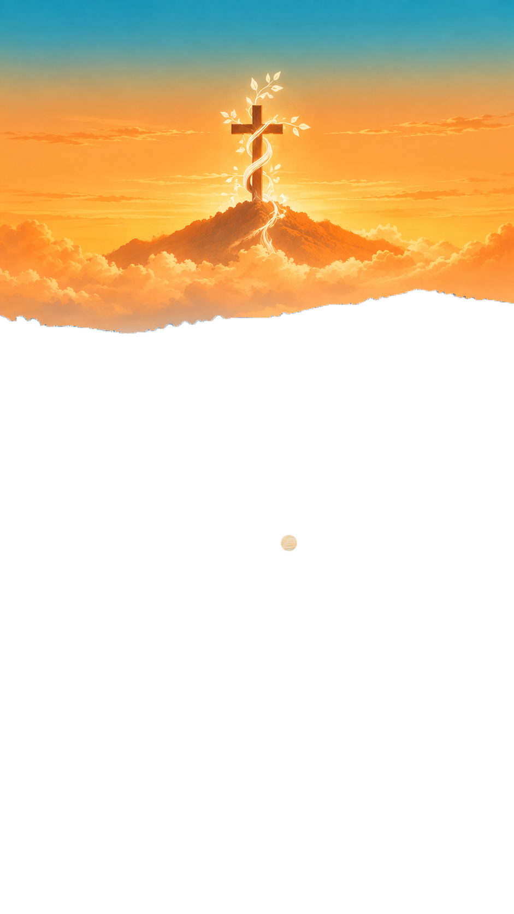
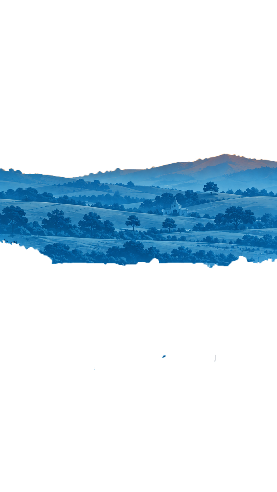
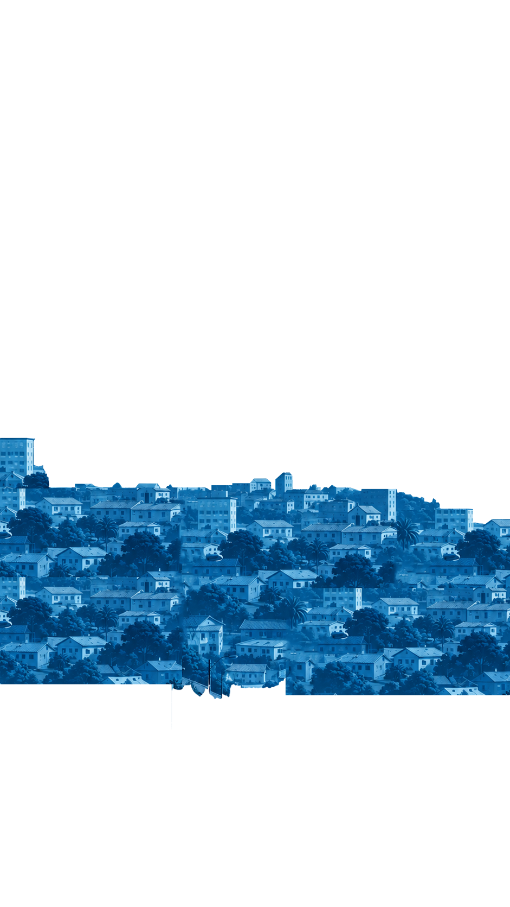
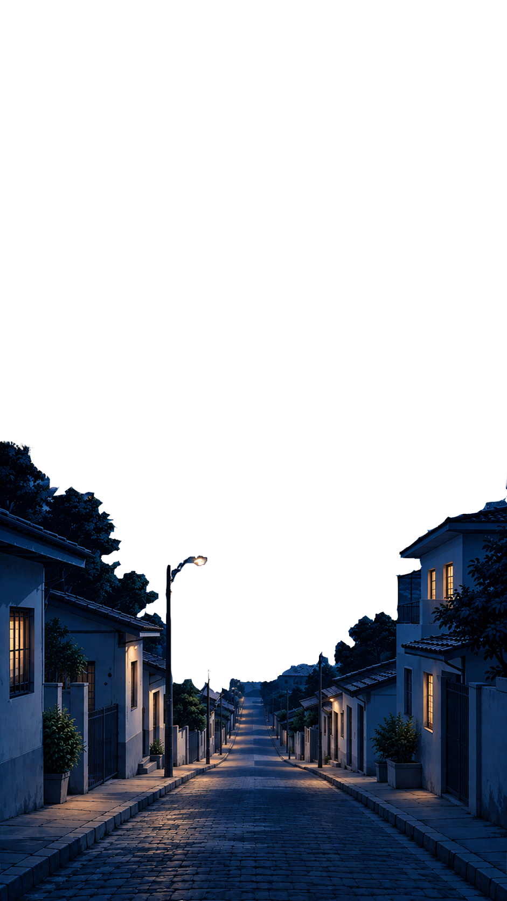

TODA A SUA COMUNIDADE EM UM SÓ MOVIMENTO
SINCRONIZAÇÃO EM TEMPO REAL
TRANSFORMANDO PEDIDOS EM TESTEMUNHOS




PEDIDOS DE ORAÇÃO
Em oração: 12
•
Respondidos: 8
Maria Silva
Agora mesmo
Recuperação de saúde da minha mãe internada no hospital.
Família Oliveira
Há 2 horas
Agradecimento pelo livramento e direção no trabalho.
João Pedro
Ontem
Oração pelos jovens do ministério e pelo retiro.
EM ORAÇÃO
"Peço oração pela recuperação da saúde da minha mãe que estava hospitalizada."
Resposta da Oração:
"Graças a Deus ela teve alta hospitalar ontem e já está em casa recuperada!"
Marcar Respondido

NOVA AURORA
A presença digital da sua igreja, viva todos os dias.